filter_low_k <- function(dat, V, moderator, min_k = 5) {
moderator <- rlang::ensym(moderator)
k_counts <- dat %>%
dplyr::count(!!moderator, name = "k_es")
keep_levels <- k_counts %>% dplyr::filter(k_es >= min_k) %>% dplyr::pull(!!moderator)
dat_f <- dat %>% dplyr::filter((!!moderator) %in% keep_levels)
idx <- which(dat[[rlang::as_string(moderator)]] %in% keep_levels)
V_f <- V[idx, idx]
list(data = dat_f, V = V_f, keep = keep_levels, k = k_counts)
}Code for figures
Note
Variable definitions:
| Variable Name | Definition |
|---|---|
ES_ID |
Unique row identifier for each \(\text{lnRR}\) effect size. |
Study_ID |
Identifier for the primary research paper. |
Cohort_ID |
Identifier for specific experimental groups within a study. |
Outcome_type |
The behavioral construct measured. Levels: Anxiety, Depression, both, unclear. |
Lifestage_exposure |
Animal’s developmental stage during music exposure. Levels: Adolescent, Juvenile, Young adult, Adult, Mixed, Unclear. |
Sex |
Sex of the subjects. Levels: Male, Female. |
Strain |
Specific animal strain or species used. |
Meta_genre |
Categorization of the music stimulus. Levels: Western Art Music / Orchestral, Popular Contemporary Music, Traditional Music / Folk / World, Mixed, Unclear. |
Music_exposure_duration |
Total time subjects were exposed to music. Levels: Acute, short, medium, long. |
Experimental_design |
Study’s methodological setup. Levels: Posttest-Only Control Group, Randomized Block, Factorial, Repeated Measures. |
Induced behavior |
Whether the tested behavior was innate or experimentally induced. |
Relative_timing |
When music was administered relative to the behavioral test. Levels: before, concurrent, both, not specified. |
Experimental_procedures |
Identifies non-treatment controls for interventions. Levels: sham, none. |
Control_condition |
Description of the control group condition. Levels: white noise, ambient noise |
Assay_type |
Type of behavioral test used. |
Overall_rob |
Overall risk of bias assessment for each study. Levels: 2 (low), 1 (moderate), 0 (high). |
NoteData Filtering & Matrix Alignment
We exclude moderator levels with fewer than five effect sizes (k < 5) to avoid unstable estimates and misleading contrasts.
lnRR
ma_all <- rma.mv(yi = lnRR,
V = VCV,
random = list(~1 | Study_ID,
~1 | ES_ID,
~1 | Strain),
test = "t",
method = "REML",
sparse = TRUE,
data = db )
overall_lnRR<-orchard_plot(ma_all,
group = "Study_ID",
xlab = "lnRR",
flip=T,trunk.size = 0.3,
branch.size = 2,alpha = 0.3) +
scale_x_discrete(labels = c("Overall effect")) +
scale_colour_brewer(palette = "Paired") +
scale_fill_brewer(palette = "Dark2")+
scale_y_continuous(breaks = seq(-4, 2, by = 1),
minor_breaks = seq(-4, 2, by = 0.5 ))
overall_lnRR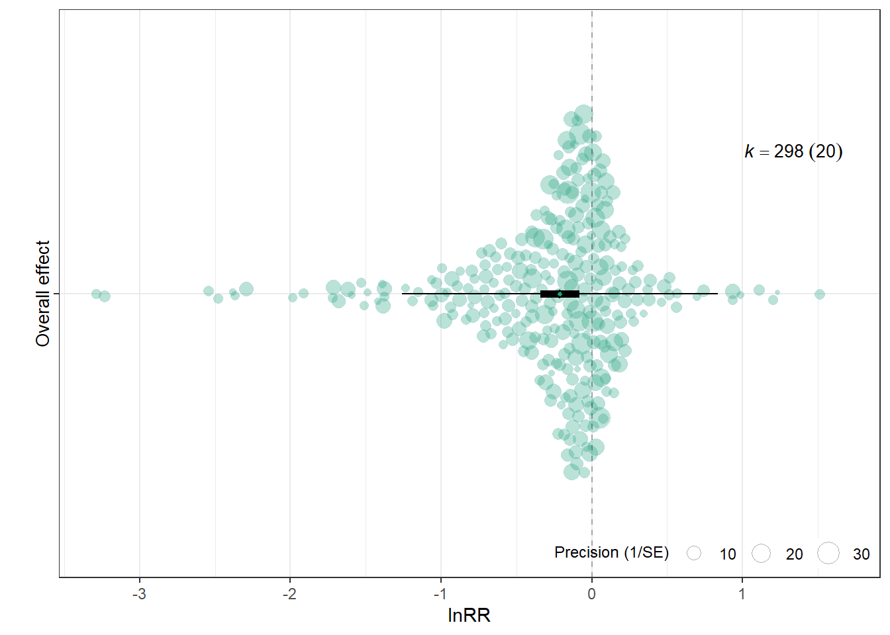
f <- filter_low_k(db, VCV,Outcome_type, min_k = 5)
db_filtered <- f$data
VCV_filtered <- f$V
mOT <- rma.mv(yi = lnRR,
V = VCV_filtered,
mods = ~ Outcome_type,
random = list(~1 | Study_ID,
~1 | ES_ID,
~1 | Strain),
test = "t",
method = "REML",
sparse = TRUE,
data = db_filtered)
orchard_outcomelnRR<-orchard_plot(mOT,
mod = "Outcome_type",
group = "Study_ID",
xlab = "lnRR",
flip = T,trunk.size = 0.3,
branch.size = 2, alpha = 0.3) +
scale_colour_brewer(palette = "Set1") +
scale_fill_brewer(palette = "Dark2")+scale_y_continuous(breaks = seq(-4, 2, by = 1),
minor_breaks = seq(-4, 2, by = 0.5 ))
orchard_outcomelnRR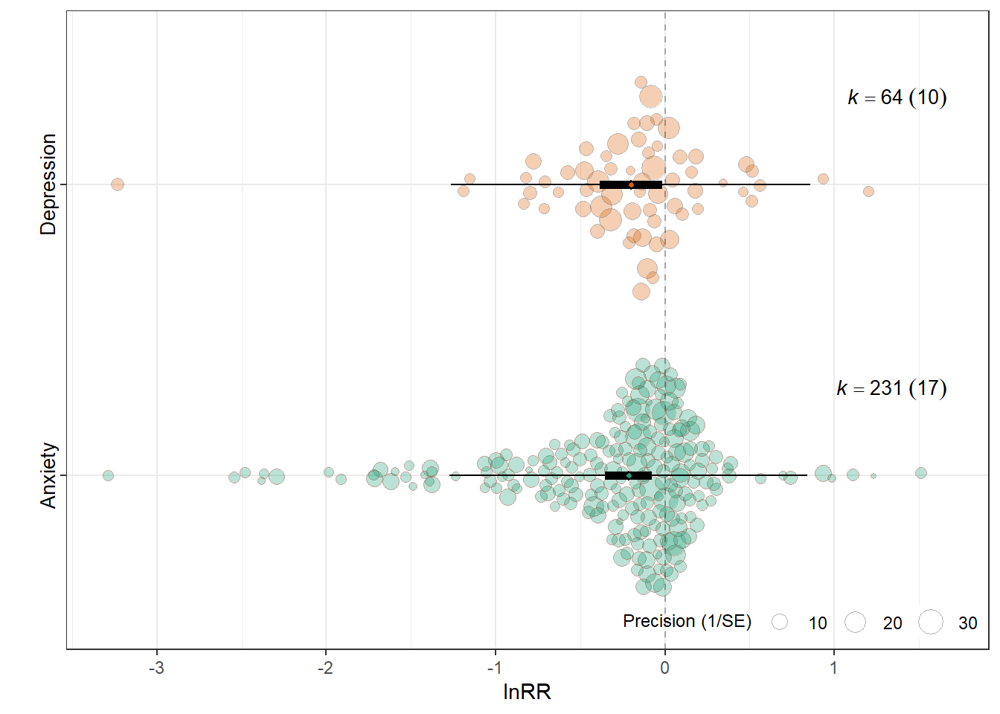
Assay type
f <- filter_low_k(db, VCV,Assay_type, min_k = 5)
db_filtered <- f$data
VCV_filtered <- f$V
mAT <- rma.mv(yi = lnRR,
V = VCV_filtered,
mods = ~ Assay_type-1,
random = list(~1 | Study_ID,
~1 | ES_ID,
~1 | Strain),
test = "t",
method = "REML",
sparse = TRUE,
data = db_filtered)
assay_labels <- c(
"Elevated Plus Maze" = "EPM",
"Open Field Test" = "OFT",
"Light-Dark Box" = "LDB",
"Forced Swim Test (FST)" = "FST",
"Tail Suspension Test (TST)" = "TST",
"Sucrose Preference Test (SPT)" = "SPT"
)
orchard_assay <- orchard_plot(
mAT,legend.pos = "top.left",
mod = "Assay_type",
group = "Study_ID",
xlab = expression(lnRR),trunk.size = 0.3,
branch.size = 2, alpha = 0.3
) +
scale_colour_brewer(palette = "Set1") +
scale_fill_brewer(palette = "Dark2") +
scale_x_discrete(labels = assay_labels) +scale_y_continuous(limits = c(-4,2),breaks = seq(-4, 2, by = 1),
minor_breaks = seq(-4, 2, by = 0.5 ))+
labs(
x = NULL,
y = expression(lnRR),
subtitle = "Behavioural assay"
) +
theme(
plot.subtitle = element_text(size = 10, face = "bold"),
axis.title.y = element_text(face = "bold"),legend.direction = "vertical"
)
orchard_assay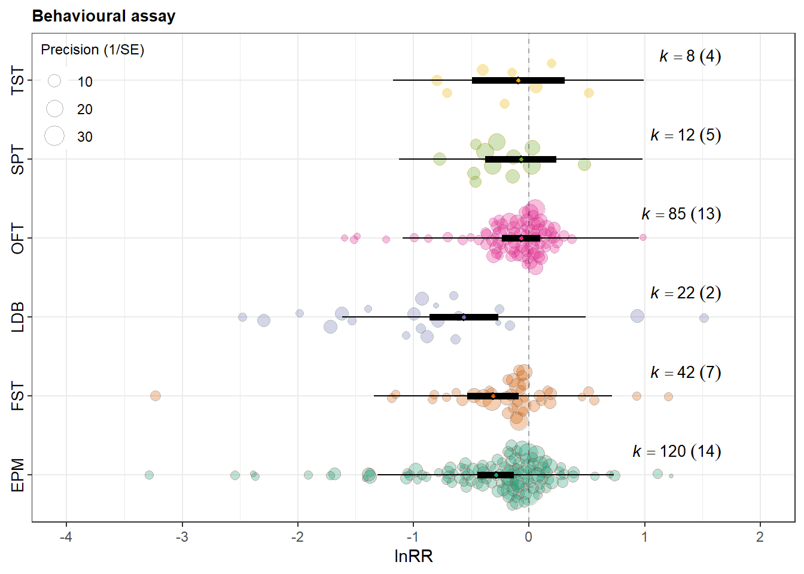
Lifestage of exposure
mLE <- rma.mv(yi = lnRR,
V = VCV,
mods = ~ Lifestage_exposure-1,
random = list(~1 | Study_ID,
~1 | ES_ID,
~1 | Strain),
test = "t",
method = "REML",
sparse = TRUE,
data = db)
lifestage_labels <- c(
"Adolescent" = "Adol.",
"Adult" = "Adult",
"Juvenile" = "Juv.",
"Young adult" = "Y. adult",
"Mixed" = "Mixed",
"Unclear" = "Unclear"
)
orchard_lifestage<-orchard_plot(mLE,legend.pos = "top.left",
mod = "Lifestage_exposure",
group = "Study_ID",
xlab = expression(lnRR),trunk.size = 0.3,
branch.size = 2,alpha=0.3 ,
flip = T) +
scale_x_discrete(labels = lifestage_labels)+
scale_colour_brewer(palette = "Set1") +
scale_fill_brewer(palette = "Dark2")+scale_x_discrete(labels = assay_labels) +scale_y_continuous(limits = c(-4,2),breaks = seq(-4, 2, by = 1),
minor_breaks = seq(-4, 2, by = 0.5 ))+ theme(legend.direction = "vertical")
orchard_lifestage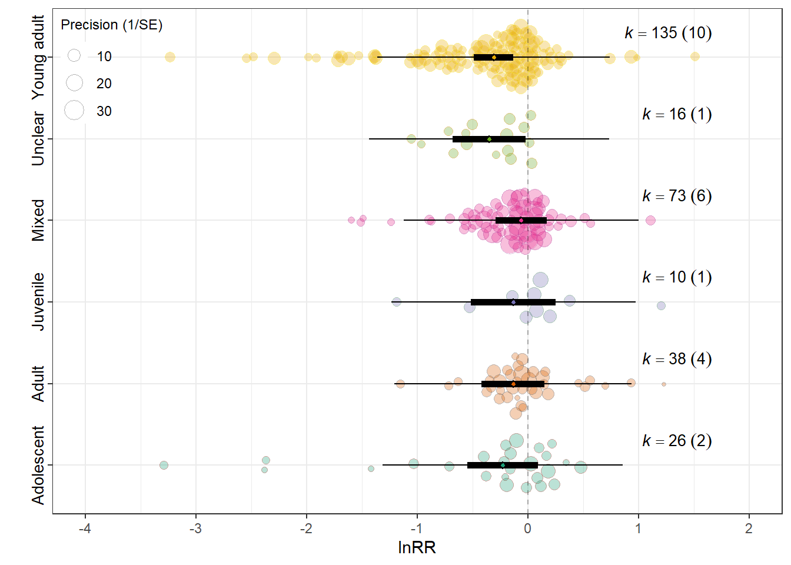
Control condition
mCC <- rma.mv(yi = lnRR,
V = VCV,
mods = ~ Control_conditions,
random = list(~1 | Study_ID,
~1 | ES_ID,
~1 | Strain),
test = "t",
method = "REML",
sparse = TRUE,
data = db)
control_labels <- c(
"ambiet sound" = "Ambient sound",
"white noise" = "White noise"
)
orchard_control<-orchard_plot(mCC,
mod = "Control_conditions",legend.pos = "top.left",
group = "Study_ID",
xlab = expression(lnRR),trunk.size = 0.3,
branch.size = 2,alpha=0.3) +
scale_x_discrete(labels = control_labels) +
scale_colour_brewer(palette = "Set1") +
scale_fill_brewer(palette = "Dark2")+scale_x_discrete(labels = assay_labels) +scale_y_continuous(limits = c(-4,2),breaks = seq(-4, 2, by = 1),
minor_breaks = seq(-4, 2, by = 0.5 ))+ theme(legend.direction = "vertical")
orchard_control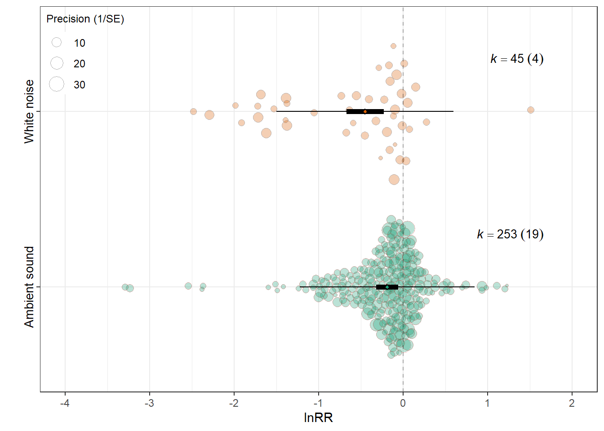
Induced behaviour
mIB <- rma.mv(yi = lnRR,
V = VCV,
mods = ~ `Induced behaviour`,
random = list(~1 | Study_ID,
~1 | ES_ID,
~1 | Strain),
test = "t",
method = "REML",
sparse = TRUE,
data = db)
orchard_behaviour<-orchard_plot(mIB,
mod = "Induced behaviour",legend.pos = "top.left",
group = "Study_ID",
xlab = expression(lnRR), trunk.size = 0.3,
branch.size = 2,alpha=0.3,
flip = T)+
scale_colour_brewer(palette = "Set1") +
scale_fill_brewer(palette = "Dark2")+scale_y_continuous(limits = c(-4,2),breaks = seq(-4, 2, by = 1),
minor_breaks = seq(-4, 2, by = 0.5 ))+ theme(legend.direction = "vertical")
orchard_behaviour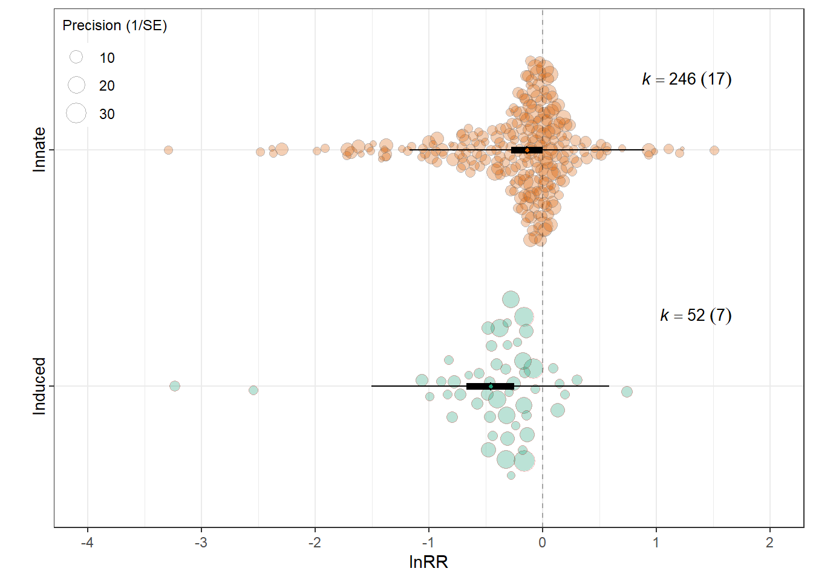
Patched figure
orchard_assay <- orchard_assay + labs(subtitle = "Behavioral assay")
orchard_lifestage <- orchard_lifestage + labs(subtitle = "Age at exposure")
orchard_control <- orchard_control + labs(subtitle = "Control condition")
orchard_behaviour <- orchard_behaviour + labs(subtitle = "Behavioral mechanism")
# 2) Hide legends on all but ONE panel (choose bottom-right here)
orchard_assay <- orchard_assay + theme(legend.position = "none")
orchard_lifestage <- orchard_lifestage + theme(legend.position = "none")
orchard_control <- orchard_control + theme(legend.position = "none")
# orchard_behaviour keeps the legend
# 3) Patch with your layout
patched_figure <- (orchard_assay + orchard_lifestage ) /
(orchard_control + orchard_behaviour) +
plot_annotation(tag_levels = "A") &
theme(
plot.tag = element_text(size = 12, face = "bold"),
plot.subtitle = element_text(size = 10, face = "bold")
)
# 4) Enforce identical lnRR scale and a single y-axis label across ALL panels
patched_figure <- patched_figure &
scale_y_continuous(
limits = c(-4, 2),
breaks = seq(-4, 2, by = 1),
minor_breaks = seq(-4, 2, by = 0.5)
) &
labs(y = expression(lnRR), x = NULL)
patched_figure
ggsave(filename = here("..","Plots", "patched_lnRR.pdf"),
plot = patched_figure,
dpi = 300, device = cairo_pdf,width = 10,
height = 10)
ggsave(filename = here("..","Plots", "patched_lnRR.jpg"),
plot = patched_figure,
width = 10,
height = 10,
dpi = 300)lnVR
db <- readr::read_csv(here("..","data","db_effect_sizes.csv")) %>%
mutate(across(c(C_n, Ex_n, C_mean, Ex_mean, C_SE, Ex_SE, C_SD, Ex_SD, lnVR, lnVR_var), as.numeric)) %>%
mutate(across(where(is.character), as.factor)) %>% filter(!is.na(lnVR), !is.na(lnVR_var))
# CALCULATE VCV USING lnVR VARIANCE
VCV <- metafor::vcalc(
vi = lnVR_var,
cluster = Cohort_ID, # The clustering variable (Study_ID + Ex_ID)
obs = ES_ID, # The unique observation/effect size ID
rho = 0.5, # Assumed correlation between outcomes from the same cohort
data = db
)Overall effect
mOV <- rma.mv(yi = lnVR,
V = VCV,
mods = ~ 1,
random = list(~1 | Study_ID,
~1 | ES_ID,
~1 | Strain),
test = "t",
method = "REML",
sparse = TRUE,
data = db)
orchard_overalllnVR<-orchard_plot(mOV,
group = "Study_ID",
xlab = "lnVR",
flip = T,trunk.size = 0.3,
branch.size = 2, alpha = 0.3) +
scale_x_discrete(labels = c("Overall effect"))+
scale_colour_brewer(palette = "Dark2") +
scale_fill_brewer(palette = "Paired")+scale_y_continuous(limits = c(-4,11),breaks = seq(-4, 10, by = 2),
minor_breaks = seq(-4, 11, by = 1 ))
orchard_overalllnVR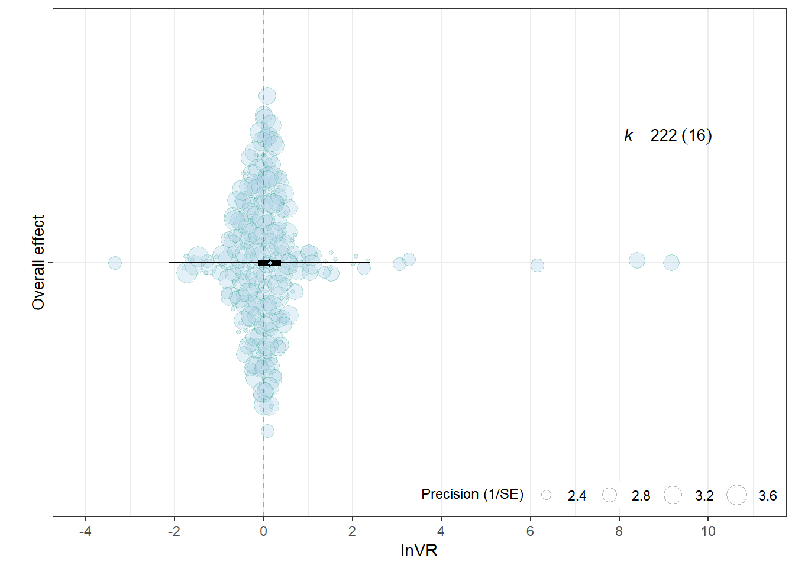
Outcome type
f <- filter_low_k(db, VCV,Outcome_type, min_k = 5)
db_filtered <- f$data
VCV_filtered <- f$V
mOT2 <- rma.mv(yi = lnVR,
V = VCV_filtered,
mods = ~ Outcome_type,
random = list(~1 | Study_ID,
~1 | ES_ID,
~1 | Strain),
test = "t",
method = "REML",
sparse = TRUE,
data = db_filtered)
orchard_outcome_lnVR<-orchard_plot(mOT2,
mod = "Outcome_type",
group = "Study_ID",
xlab = "lnVR",
flip = T,trunk.size = 0.3,alpha = 0.3,
branch.size = 2) +
scale_colour_brewer(palette = "Dark2") +
scale_fill_brewer(palette = "Set1")+scale_y_continuous(limits = c(-4,11),breaks = seq(-4, 10, by = 2),
minor_breaks = seq(-4, 11, by = 1 ))
orchard_outcome_lnVR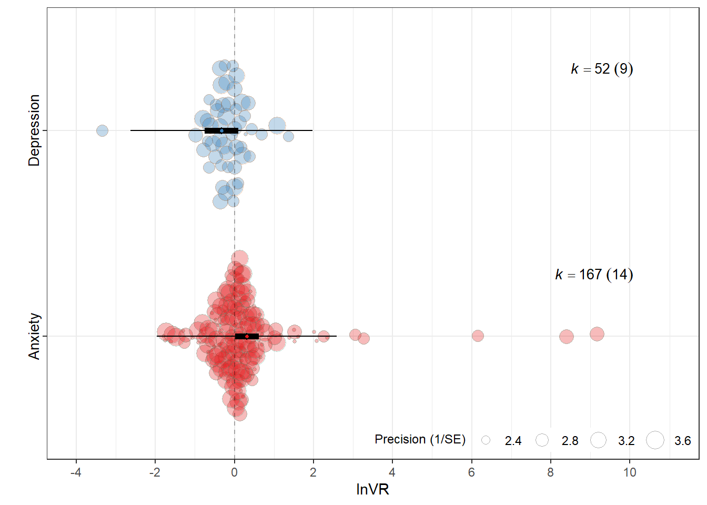
Assay type
#| label: filter_assay_type_lnVR
f <- filter_low_k(db, VCV, Assay_type, min_k = 5)
db_filtered <- f$data
VCV_filtered <- f$V
mAT <- rma.mv(yi = lnVR,
V = VCV_filtered,
mods = ~ Assay_type-1,
random = list(~1 | Study_ID,
~1 | ES_ID,
~1 | Strain),
test = "t",
method = "REML",
sparse = TRUE,
data = db_filtered)
assay_labels <- c(
"Elevated Plus Maze" = "EPM",
"Open Field Test" = "OFT",
"Light-Dark Box" = "LDB",
"Forced Swim Test (FST)" = "FST",
"Tail Suspension Test (TST)" = "TST",
"Sucrose Preference Test (SPT)" = "SPT"
)
orchard_assay <- orchard_plot(
mAT,legend.pos = "top.left",
mod = "Assay_type",
group = "Study_ID",
xlab = expression(lnVR) ,trunk.size = 0.3,
branch.size = 2,alpha = 0.3
) +
scale_colour_brewer(palette = "Set1") +
scale_fill_brewer(palette = "Dark2") +
scale_x_discrete(labels = assay_labels)+
scale_y_continuous(limits = c(-4,11),breaks = seq(-4, 11, by = 2),
minor_breaks = seq(-4, 11, by = 1 ))+
labs(
x = NULL,
y = expression(lnVR),
subtitle = "Behavioural assay"
) +
theme(
plot.subtitle = element_text(size = 10, face = "bold"),
axis.title.y = element_text(face = "bold"),legend.direction = "vertical")
orchard_assay
Lifestage of exposure
mLE <- rma.mv(yi = lnVR,
V = VCV,
mods = ~ Lifestage_exposure-1,
random = list(~1 | Study_ID,
~1 | ES_ID,
~1 | Strain),
test = "t",
method = "REML",
sparse = TRUE,
data = db)
lifestage_labels <- c(
"Adolescent" = "Adol.",
"Adult" = "Adult",
"Juvenile" = "Juv.",
"Young adult" = "Y. adult",
"Mixed" = "Mixed",
"Unclear" = "Unclear"
)
orchard_lifestage<-orchard_plot(mLE,legend.pos = "top.left",
mod = "Lifestage_exposure",
group = "Study_ID",
xlab = expression(lnVR), trunk.size = 0.3,
branch.size = 2 ,alpha = 0.3
) + scale_x_discrete(labels = lifestage_labels)+
scale_colour_brewer(palette = "Set1") +
scale_fill_brewer(palette = "Dark2")+scale_y_continuous(limits=c(-4,11),breaks = seq(-4, 11, by = 2),
minor_breaks = seq(-4, 11, by = 1 ))+
theme(legend.direction = "vertical")
orchard_lifestage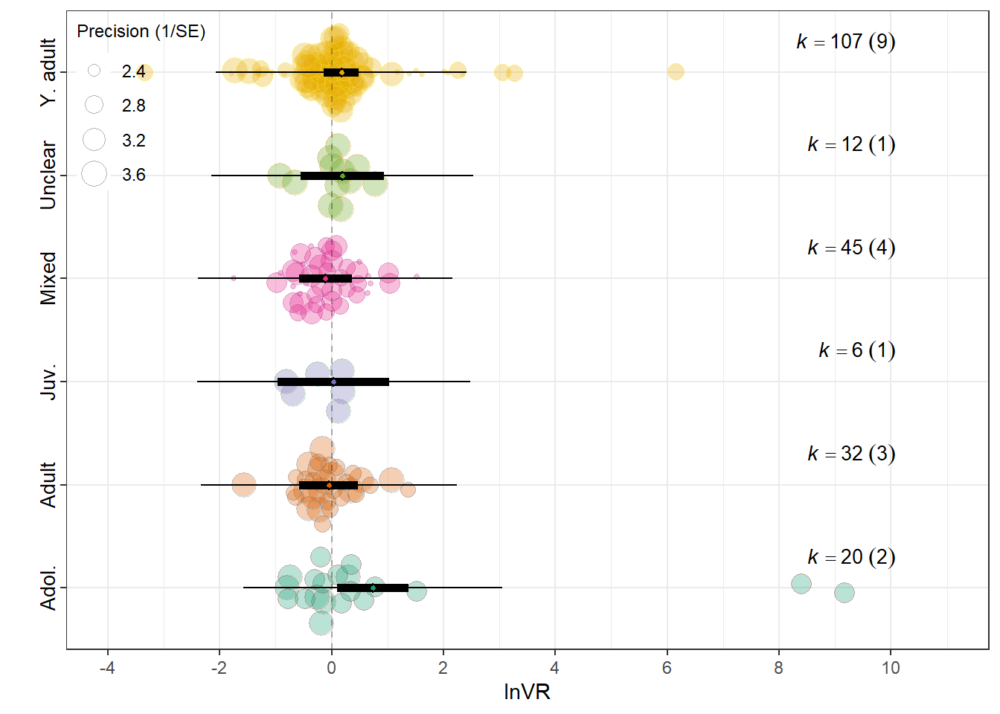
Music genre
Meta_genre
mMG <- rma.mv(yi = lnVR,
V = VCV,
mods = ~ Meta_genre-1 ,
random = list(~1 | Study_ID,
~1 | ES_ID,
~1 | Strain),
test = "t",
method = "REML",
sparse = TRUE,
data = db)
genre_labels <- c(
"Mixed" = "Mixed",
"Popular Contemporary Music" = "Contemporary",
"Traditional Music / Folk / World" = "World",
"Western Art Music / Orchestral" = "Orchestral"
)
orchard_genre<-orchard_plot(mMG,legend.pos = "top.left",
mod = "Meta_genre",
group = "Study_ID",
xlab = "lnVR",
flip = T,trunk.size = 0.3,
branch.size = 2,alpha = 0.3) +
scale_x_discrete(labels = genre_labels)+
scale_colour_brewer(palette = "Set1") +
scale_fill_brewer(palette = "Dark2")+scale_y_continuous(limits=c(-4,11),breaks = seq(-4, 11, by = 2),
minor_breaks = seq(-4, 11, by = 1 ))+
theme(legend.direction = "vertical")
orchard_genre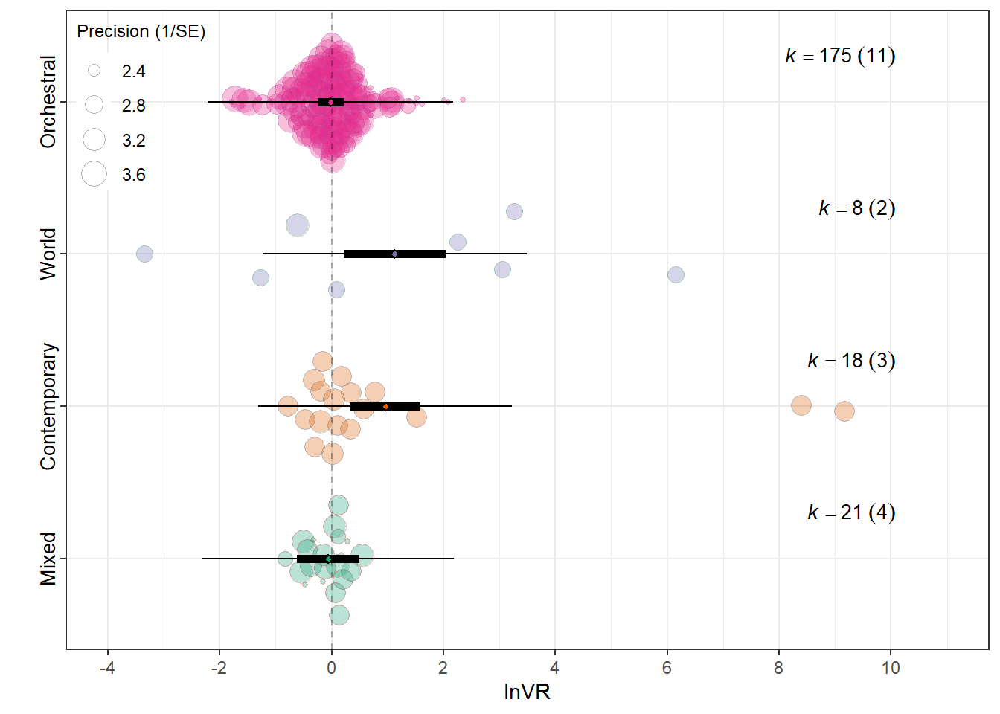
Experimental design
mEXD <- rma.mv(yi = lnVR,
V = VCV,
mods = ~ Experimental_design-1,
random = list(~1 | Study_ID,
~1 | ES_ID,
~1 | Strain),
test = "t",
method = "REML",
sparse = TRUE,
data = db)
design_labels<-c(
"Factorial"="Factorial",
"Posttest-Only Control Group"="Posttest",
"Repeated Measures"="Repeated"
)
orchard_design<-orchard_plot(mEXD,legend.pos = "top.left",
mod = "Experimental_design",
group = "Study_ID",
xlab = expression(lnVR),
flip=T,
trunk.size = 0.3,
branch.size = 2,alpha = 0.3 ) +
scale_x_discrete(labels = design_labels) +
scale_colour_brewer(palette = "Set1") +
scale_fill_brewer(palette = "Dark2")+scale_y_continuous(limits = c(-4,11),breaks = seq(-4, 11, by = 2),
minor_breaks = seq(-4, 11, by = 1 ))+
theme(legend.direction = "vertical")
orchard_design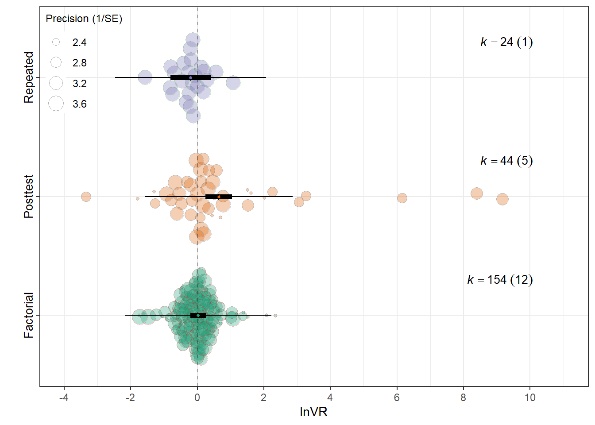
orchard_assay <- orchard_assay + labs(subtitle = "Behavioral assay")
orchard_lifestage <- orchard_lifestage + labs(subtitle = "Age at exposure")
orchard_genre <- orchard_genre + labs(subtitle = "Music meta-genre")
orchard_design <-orchard_design + labs(subtitle = "Experimental design")
# 2) Hide legends on all but ONE panel
orchard_assay <- orchard_assay + theme(legend.position = "none")
orchard_lifestage <- orchard_lifestage + theme(legend.position = "none")
orchard_genre <- orchard_genre+ theme(legend.position = "none")
# orchard_behaviour keeps the legend
# 3) Patch with your layout
patched_figure <- ( orchard_assay+orchard_lifestage) /
(orchard_genre + orchard_design) +
plot_annotation(tag_levels = "A") &
theme(
plot.tag = element_text(size = 12, face = "bold"),
plot.subtitle = element_text(size = 10, face = "bold")
)
# 4) Enforce identical lnRR scale and a single y-axis label across ALL panels
patched_figure <- patched_figure &
scale_y_continuous(
limits = c(-4, 11),
breaks = seq(-4, 11, by = 2),
minor_breaks = seq(-4, 11, by = 1)
) &
labs(y = expression(lnVR), x = NULL)
patched_figure
ggsave(filename = here("..","Plots", "patched_lnVR.pdf"),
plot = patched_figure,
dpi = 300, device = cairo_pdf,width = 10,
height = 10)
ggsave(filename = here("..","Plots", "patched_lnVR.jpg"),
plot = patched_figure,
width = 10,
height = 10,
dpi = 300)Overall effects figure
fig2<-(overall_lnRR/orchard_overalllnVR)
fig2<-fig2+
plot_annotation(
title = '',
tag_levels = 'A'
)
fig2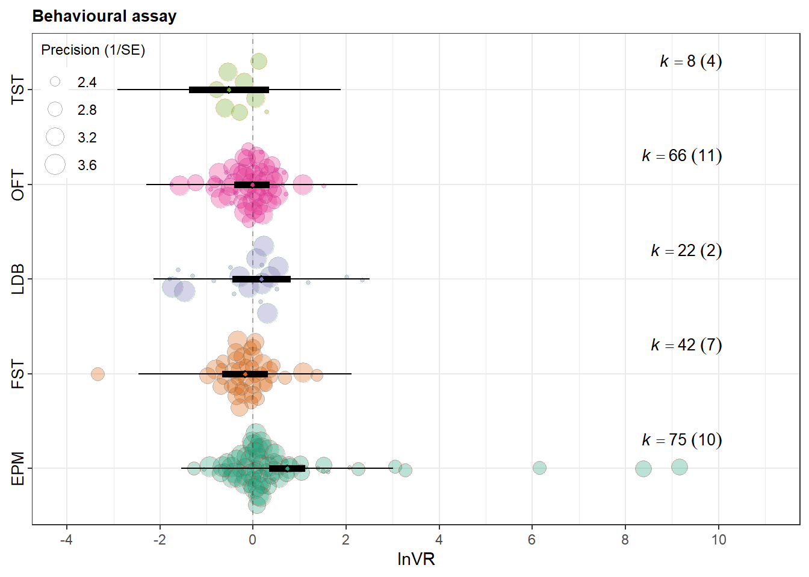
ggsave(filename = here("..","Plots", "overall_effects.pdf"),
plot = fig2,
dpi = 300, device = cairo_pdf)
ggsave(filename = here("..","Plots", "overall_effects.jpg"),
plot = fig2,
width = 7,
height = 9,
dpi = 300)Outcome type figure
fig3<-(orchard_outcomelnRR/orchard_outcome_lnVR)
fig3<-fig3+
plot_annotation(
title = '',
tag_levels = 'A'
)
fig3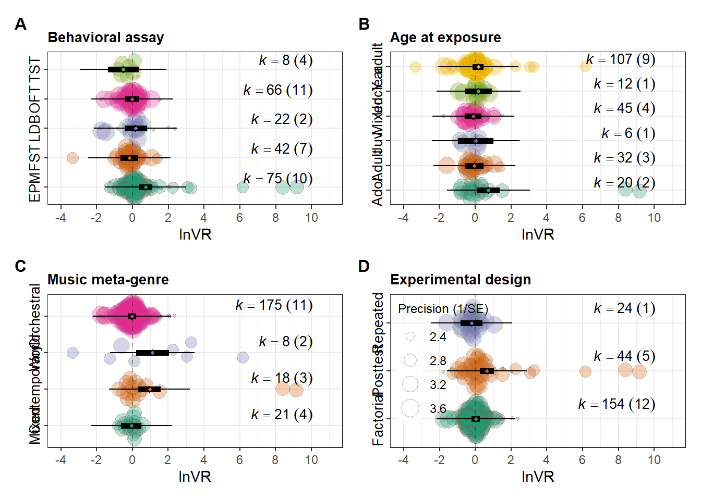
ggsave(filename = here("..","Plots", "outcome_effects.pdf"),
plot = fig3,
dpi = 300, device = cairo_pdf)
ggsave(filename = here("..","Plots", "outcome_effects.jpg"),
plot = fig3,
width = 7,
height = 9,
dpi = 300)